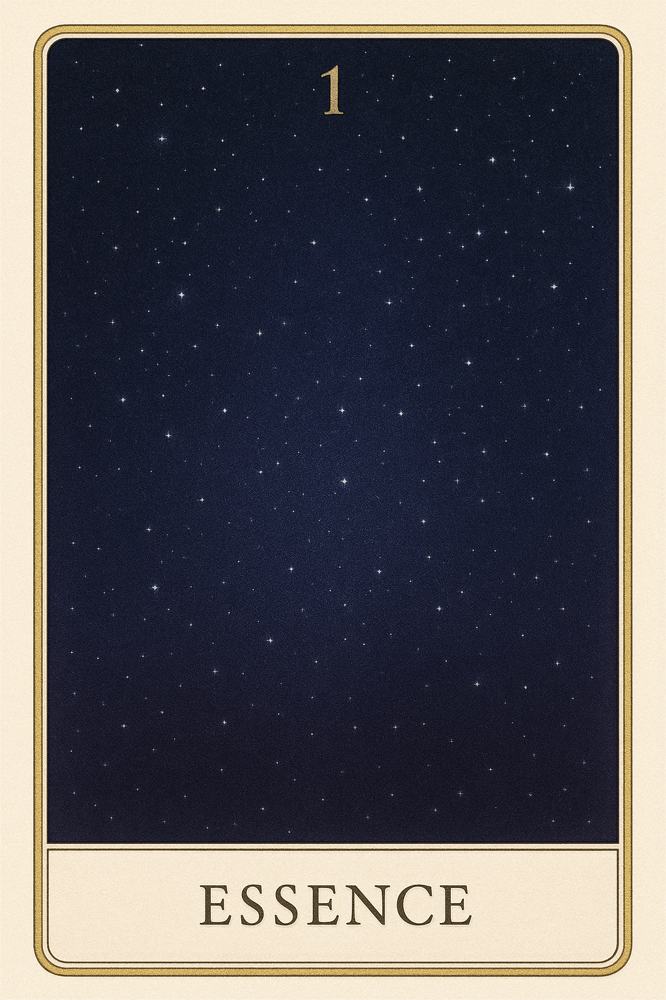
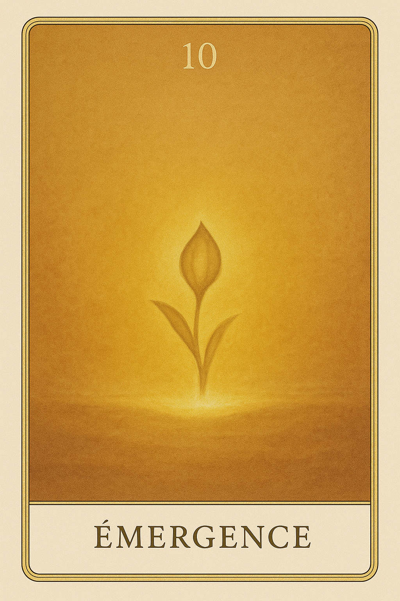
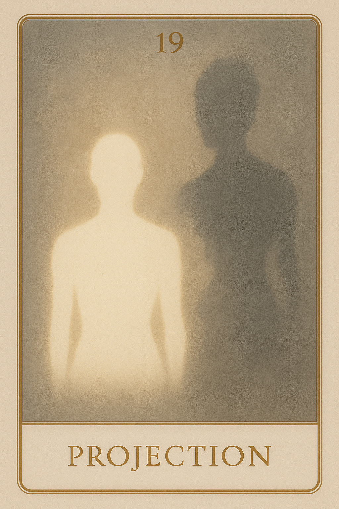
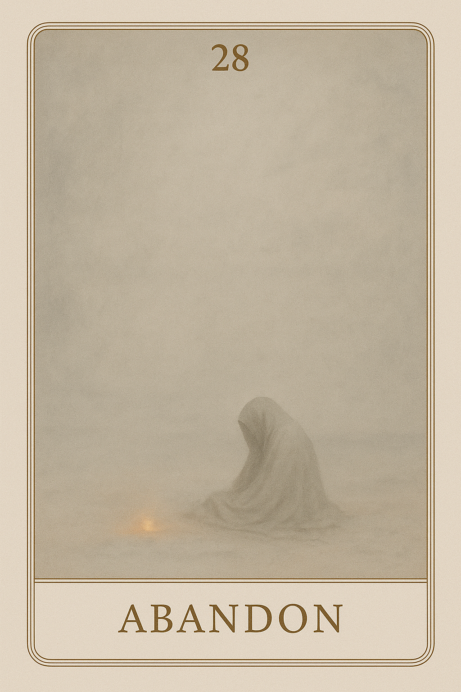
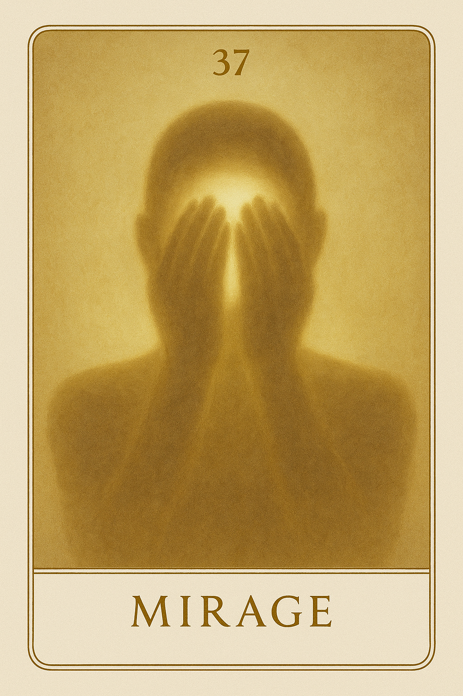
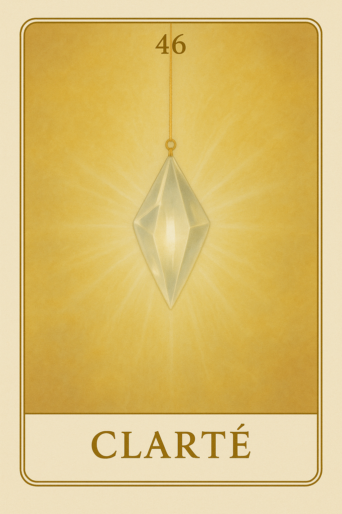
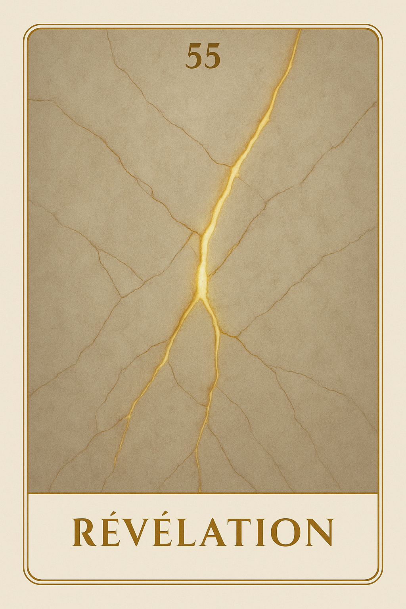
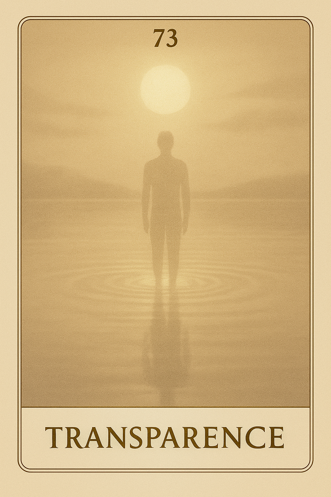

Famille 1 – Râ (Soleil)
La première famille de Seshat, guidée par le Soleil et la puissance de Râ, éclaire la naissance de l’esprit. Elle incarne l’élan originel, la clarté primordiale et l’appel à être pleinement soi, dans une conscience lucide et structurée.
Carte 1 – Essence
Mots-clés : éveil de l’esprit, lumière intérieure, conscience pure, origine de l’être
Chiffre caché : 217
Lecture inversée : 7 → 1 → 2
Planète principale : Soleil
Divinité principale : Râ
Planète secondaire : Soleil
Divinité secondaire : Râ
Interprétation de la carte 1 : Essence (droite)
Lecture intuitive rapide
Seshat contemple l’esprit dans son état le plus pur. Elle y voit un point fixe de lumière, une conscience encore intacte, non blessée par l’incarnation, ni diluée dans la mémoire. Rien ne s’attache. Rien ne projette. Dans ce premier regard, il n’y a que la Présence. Ce que Seshat montre à l’esprit, c’est que tout changement commence là : non pas dans l’agir, mais dans la reconnaissance silencieuse de l’être. mais parce que sa nature est lumière.
1. Caractère de la personne
Ce que l’esprit doit entendre, c’est que l’être précède tout. Il n’a pas à devenir, mais à se souvenir de cette part en lui qui ne cherche rien, et pourtant porte tout.
2. Plan affectif
Seshat montre un esprit intouché, non encore appelé à aimer, ni à perdre. Il flotte dans une paix sans besoin, et dans ce silence, réside déjà l’ouverture.
5. Plan spirituel
La lumière est là, mais elle ne parle pas encore. Ce n’est pas une révélation, c’est une reconnaissance. Râ n’enseigne rien ici : il éclaire.
Carte 1 : Essence (inversée)
1. Caractère de la personne
L’esprit veut se saisir. Il cherche à être quelqu’un, au lieu de laisser l’être apparaître. La volonté forme une tension inutile et brouille la paix du commencement.
2. Plan affectif
Le vide est interprété comme un manque. L’esprit tente de remplir ce qui, en vérité, n’attend que l’éveil doux de la relation.
5. Plan spirituel
Chercher une réponse, ici, ferme la lumière. Le message de Seshat est clair : il faut apprendre à écouter ce qui ne dit rien.
Résumé de la carte 1 : Essence
Essence est la carte de l’éveil absolu, sans contenu. Elle est l’origine du mouvement sans mouvement. Seshat y voit la présence pure, non encore séparée, non encore incarnée. Elle dit à l’esprit : “Regarde-toi avant toute forme. C’est là que tu commences à changer.”
Carte 10 – Emergence
Mots-clés : : naissance intérieure, éveil de soi, présence à soi, lumière du corps
Chiffre caché : 226
lecture inversée : 6 → 2 → 2
Divinité principale : Râ
Planète secondaire : Terre
Divinité secondaire : Geb
Interprétation de la carte 10 : Emergence (droite)
Lecture intuitive rapide
Quelque chose en toi se dresse. Pas pour dominer. Pas pour être vu. Mais pour exister. C’est un soulèvement lent, un appel intérieur, un mouvement d’être qui ne demande pas l’approbation du monde. Ce n’est pas encore un "je suis". C’est l’instant avant — le frémissement de ta propre naissance en toi.
1. Caractère de la personne
Tu n’as pas besoin de dire qui tu es. Mais tu sens que tu es là. Quelque chose prend forme en toi, sans justification, sans image. Ce n’est pas l’ego, c’est la conscience du corps qui s’éveille à lui-même.
2. Plan affectif
Tu ressens une chaleur intérieure qui ne va vers personne. Elle est pour toi, en toi, sans direction. Ce n’est pas encore de l’amour : c’est la naissance d’un sentiment de présence sensible.
5. Plan spirituel
Le divin ne descend pas ici. Il remonte depuis ta densité. C’est la lumière intérieure qui s’étire vers la surface, non pour s’afficher, mais pour s’ancrer dans ta matière.
Carte 10 : Emergence (inversée)
1. Caractère de la personne
Tu sens que quelque chose veut naître en toi, mais tu l’écrases par peur d’être différent. Tu veux rester flou, discret, absent. Mais l’émergence se fera, avec ou sans ton confort.
2. Plan affectif
Tu refuses de sentir ce que ton corps commence à dire. Tu veux des sentiments clairs, définis, tournés vers l’extérieur. Mais ici, il ne s’agit pas d’aimer quelqu’un — il s’agit de t’éprouver vivant.
5. Plan spirituel
Tu veux que la lumière vienne d’en haut, alors qu’elle s’élève en toi. Mais tu ne la vois pas, parce que tu refuses de t’incarner vraiment.
Résumé de la carte 10 : Emergence
Émergence est la carte du soi qui naît à lui-même, sans rôle, sans regard, sans pression. Elle dit simplement : “Tu es en train d’apparaître.”
Carte 19 – Projection
Mots-clés : : image de soi, quête d’identité, ego et apparence, rayonnement personnel
Chiffre caché : 235
lecture inversée : 5 → 3 → 2
Divinité principale : Râ
Planète secondaire : Jupiter
Divinité secondaire : Amon-Rê
Interprétation de la carte 19 : Projection (droite)
Lecture intuitive rapide
Tu regardes le monde, mais sans t’en rendre compte, tu y cherches ton propre reflet. Ce que tu veux être, ce que tu crois devoir incarner, ce que tu espères qu’on voit en toi : tout cela s’imprime sur les autres, les imprègne. Mais la question est là : est-ce bien toi que tu montres, ou une attente ? Une forme de toi, ou ton double idéalisé ?
1. Caractère de la personne
Tu t’es construit une image. Elle est peut-être fidèle, peut-être brillante, mais elle reste une forme. Ce que tu renvoies dans le monde influence ce que tu crois être. Si tu veux savoir qui tu es, commence par observer ce que tu veux montrer.
2. Plan affectif
Tu cherches à être vu sous un certain jour, parce que tu ne te vois pas encore pleinement toi-même. Tant que tu n’habites pas ton image avec douceur, elle te domine.
5. Plan spirituel
Tu confonds parfois ton être avec sa lumière. La clarté que tu projettes est réelle, mais ce n’est pas toute ta vérité. Retiens-toi d’y croire totalement.
Carte 19 : Projection (inversée)
1. Caractère de la personne
Tu es prisonnier d’une image de toi. Tu agis pour être perçu d’une certaine manière. Mais ce masque ne tient pas. Il est temps de regarder ce qu’il cache.
2. Plan affectif
Tu espères exister à travers le regard des autres, parce que ton propre regard sur toi reste dur ou vide. L’image devient alors une fuite.
5. Plan spirituel
Tu veux rayonner, guider, inspirer. Mais ce besoin d’éclat t’éloigne de la source. Retrouve la flamme, pas son reflet.
Résumé de la carte 19 : Projection
Projection est la carte de l’image émise, de la volonté de paraître, de la clarté fabriquée. Ce n’est pas encore un mensonge : c’est une tentative sincère d’exister. Mais elle interroge : “Est-ce que ce que tu montres est encore toi ? Ou seulement ce que tu espères être ?”
Carte 28 – Abandon
Mots-clés : : perte de soi, renoncement intérieur, abandon spirituel, feu intérieur éteint
Chiffre caché : 190
lecture inversée : 0 → 9 → 1
Divinité principale : Râ
Planète secondaire : Mars
Divinité secondaire : Sekhmet
Interprétation de la carte 28 : Abandon (droite)
Lecture intuitive rapide
Tu ne veux plus porter ce feu. Tu sens encore la présence de l’élan, du souffle, de la puissance — mais tu n’en veux plus. Ce n’est pas une fatigue. C’est une rupture intérieure. Tu refuses d’habiter ce que tu es, tu lâches le fil, tu délaisses la lumière. Par colère, par peur, par tristesse. Par orgueil ou par oubli. Mais le feu n’est pas parti. C’est toi qui l’as laissé derrière.
1. Caractère de la personne
Tu as cessé de vouloir. Ce n’est pas la paix : c’est une coupure. Une volonté éteinte, comme une lumière que tu refuses d’allumer. Tu n’as plus la force, ou tu ne veux plus l’avoir.
2. Plan affectif
Tu te retires du lien non pour te préserver, mais parce que tu ne crois plus en ta capacité à exister dedans. Ce n’est pas l’autre que tu rejettes : c’est toi, dans ta propre présence.
5. Plan spirituel
Tu renonces à ton feu. Tu abandonnes l’élan, la source, l’étincelle. Tu veux que tout cesse, même doucement. Mais ce feu, même tu, brûle encore. Il ne t’a pas quitté.
Carte 28 : Abandon (inversée)
1. Caractère de la personne
Tu te laisses glisser loin de toi-même. Tu n’attends plus rien. Tu préfères disparaître intérieurement que faire face à ton feu. Mais ce refus t’enferme plus qu’il ne t’éteint.
2. Plan affectif
Tu repousses la main tendue. Pas par mépris. Par non-appartenance. Tu crois que tu n’as plus ta place, que ta lumière dérange, ou qu’elle ne sert plus à rien. Et tu t’effaces.
5. Plan spirituel
Tu crois que tu n’as plus de rôle à jouer. Mais tu refuses surtout de traverser ce que ton feu demande. Ce n’est pas l’extinction : c’est une mise à l’écart volontaire de ta propre source.
Résumé de la carte 28 : Abandon
Abandon est la carte du refus d’être. Elle ne parle pas de faiblesse, mais d’un acte silencieux : celui de laisser le feu s’éteindre en soi. Elle dit : “Ce que tu veux fuir est en toi. Ce que tu laisses derrière, c’est toi-même.”
Carte 37 – Mirage
Mots-clés : : illusion de soi, rôle intérieur, masque identitaire, désalignement personnel
Chiffre caché : 172
lecture inversée : 2 → 7 → 1
Divinité principale : Râ
Planète secondaire : Mercure
Divinité secondaire : Thot
Interprétation de la carte 37 : Mirage (droite)
Lecture intuitive rapide
Tu y as cru. À cette image. À ce rôle. À ce "je suis" que tu tenais droit. Mais plus tu avances, plus ça glisse. Ce que tu croyais fixe est flou. Ce que tu affirmais commence à trembler. Tu ne sais plus si c’était vrai — ou si tu voulais juste que ça le soit. Le mirage ne s'effondre pas. Il attend que tu ouvres les yeux.
1. Caractère de la personne
Tu commences à voir que l’image que tu portes ne te correspond plus. Tu ne fuis pas, tu regardes. Tu doutes, mais tu avances. Ce que tu croyais être toi n’est peut-être qu’un rôle. Et tu es prêt à l’interroger.
2. Plan affectif
Tu vois que tu t’étais protégé derrière une image. Tu t’étais rassuré en croyant à cette version de toi. Mais tu n’as plus envie de te mentir. Tu veux te regarder vraiment.
5. Plan spirituel
Tu discernes les couches de toi. Tu n’accuses pas. Tu observes. Ce que tu croyais être la lumière était peut-être un écran. Mais maintenant, tu veux que ça brille juste.
Carte 37 : Mirage (inversée)
1. Caractère de la personne
Tu t’accroches à l’image. Tu ne veux pas voir qu’elle t’éloigne de toi. Tu dis "je suis" — mais c’est un rôle que tu protèges. Et tu t’y perds à force d’y croire.
2. Plan affectif
Tu continues à te dire que c’est toi. Tu répètes ce rôle pour ne pas affronter ce que tu ressens vraiment. Ce n’est pas l’autre que tu veux convaincre : c’est toi.
5. Plan spirituel
Tu fuis ta propre lumière. Tu préfères la clarté brillante du mirage à la vérité nue. Tu sais que ça sonne faux. Mais tu n’oses pas encore tout remettre en question.
Résumé de la carte 37 : Mirage
Mirage est la carte de l’image construite. Elle ne parle pas de mensonge, mais de désalignement doux, de rôle intériorisé, de forme brillante devenue prison. Elle dit : “Ce que tu crois être peut te trahir. Ce que tu montres peut t’éloigner. Le seul vrai "je suis", c’est celui que tu n’as pas besoin de défendre.”
Carte 46 – Clarté
Mots-clés : : clarté intérieure, vérité de soi, lumière personnelle, quête d’authenticité
Chiffre caché : 163
lecture inversée : 3 → 6 → 1
Divinité principale : Râ
Planète secondaire : Vénus
Divinité secondaire : Hathor
Interprétation de la carte 46 : Clarté (droite)
Lecture intuitive rapide
Tu veux savoir qui tu es. Pas ce que tu fais. Pas ce que tu montres. Tu veux t’approcher de ce noyau simple — celui qui n’a pas besoin d’effort pour exister. Mais parfois, ton élan se disperse. Tu cherches à briller, à plaire, à dire. Et c’est là que la clarté se trouble. Car ce que tu es, profondément, ne crie pas. Il s’éclaire.
1. Caractère de la personne
Tu veux dire ta vérité sans masque. Pas pour convaincre, mais pour t’aligner. Ce que tu deviens n’a pas besoin d’effets : il demande juste à être vu — par toi d’abord.
2. Plan affectif
Tu veux être aimé pour ce que tu es. Mais cela suppose que tu sois déjà en paix avec cette part de toi. L’amour véritable commence dans la justesse du regard posé sur soi.
5. Plan spirituel
Tu avances vers un centre lumineux et paisible. Plus tu déposes les rôles, plus ce centre se révèle. Il n’y a rien à forcer. Rien à prouver. Juste à laisser paraître.
Carte 46 : Clarté (inversée)
1. Caractère de la personne
Tu veux être toi. Mais tu cherches encore à le faire voir, à le faire valider. Cette tension obscurcit ta lumière. Elle devient expression plutôt qu’émanation.
2. Plan affectif
Tu demandes qu’on t’aime, mais tu doutes encore de ce que tu es. Alors tu ajustes, tu corriges, tu sur-joues. Et tu t’éloignes de ce qui pourrait vraiment toucher.
5. Plan spirituel
Tu crois que l’éveil se manifeste. Mais il se dévoile. Tu veux contrôler la lumière — mais elle n’apparaît que lorsque tu cesses de la chercher.
Résumé de la carte 46 : Clarté
Clarté est la carte du retour à la lumière intérieure. Pas une lumière conquérante. Pas une lumière démonstrative. Une lumière paisible, cohérente, qui se pose naturellement quand le regard devient juste. Elle dit : “Tu n’as pas à prouver qui tu es. Tu as à l’éclairer doucement, depuis l’intérieur.”
Carte 55 – Révélation
Mots-clés : : révélation de soi, lumière intérieure, vérité authentique, éveil spirituel
Chiffre caché : 181
lecture inversée : 1 → 8 → 1
Divinité principale : Râ
Planète secondaire : Saturne
Divinité secondaire : Osiris
Interprétation de la carte 55 : Révélation (droite)
Lecture intuitive rapide
Tu crois savoir qui tu es. Mais ce que tu vois maintenant ne correspond plus à ton récit. Une part de toi se dévoile, brute, sans filtre. Et ce que tu ressens, ce que tu traverses, n’est pas un défaut : c’est la lumière nue de ton être, celle que tu ne contrôles plus — parce qu’elle est enfin vraie.
1. Caractère de la personne
Tu vois clair en toi. Pas dans tes rôles, ni tes habitudes. Mais dans ce qui vibre au fond, sans maquillage. Et cette révélation t’ancre. Même si elle bouscule.
2. Plan affectif
Tu ne joues plus à l’image. Tu ressens, tu vis, tu dis. Et c’est dans cette vérité nue que le lien peut enfin devenir réel.
5. Plan spirituel
Tu es traversé par une lumière intérieure que tu ne maîtrises plus. Et c’est dans cette clarté non choisie que ton chemin commence vraiment.
Carte 55 : Révélation (inversée)
1. Caractère de la personne
Tu continues à te raconter. Mais ce que tu vis ne colle plus à ton discours. Et tant que tu refuses de voir, tu t’éloignes de toi.
2. Plan affectif
Tu veux rester dans une version de toi plus confortable. Mais ce que tu caches te coupe de ta propre vérité.
5. Plan spirituel
Tu redoutes ce que la lumière pourrait révéler. Mais ce n’est pas en restant dans l’ombre que tu trouveras ta voie.
Résumé de la carte 55 : Révélation
Révélation est la carte de la lumière qui met à nu, celle qui ne flatte pas, qui ne ment pas, mais qui montre exactement ce que tu es devenu. Elle ne juge pas — mais elle ne permet plus l’illusion. Elle t’invite à habiter ce que tu vois plutôt que de chercher à l’ajuster. Elle dit : “Tu n’as pas changé. Tu viens juste de te voir pour la première fois.”
Carte 64 – Eclipse

Mots-clés : : passage intérieur, voile spirituel, réalignement de soi, lumière et obscurité
Chiffre caché : 208
lecture inversée : 8 → 0 → 2
Divinité principale : Râ
Planète secondaire : Uranus
Divinité secondaire : Maât
Interprétation de la carte 64 : Eclipse (droite)
Lecture intuitive rapide
Tu pensais savoir. Qui tu étais. Où tu allais. Et puis quelque chose s’est mis entre toi et ta propre lumière. Tu ne brilles plus de la même façon. Ce n’est pas une chute, ni une perte. C’est un voile. Une zone d’ombre qui ne dit pas que tu t’es trompé — mais que tu dois réajuster. Pas pour redevenir ce que tu étais. Mais pour t’ouvrir autrement, dans un lien plus vrai, plus juste, plus humble.
1. Caractère de la personne
Tu vis un moment de retrait intérieur. Ce n’est pas un effondrement. C’est un réajustement de ta lumière. Ta vérité personnelle se décale pour mieux s’aligner avec l’ensemble.
2. Plan affectif
Tu ressens une distance, une baisse de clarté dans le lien. Mais ce flou est fertile. Il t’invite à revoir comment tu es en relation. Non pas depuis ton rayonnement, mais depuis ta réceptivité.
5. Plan spirituel
L’éclipse est un passage sacré. Elle enseigne l’humilité du « je » face au tout. Elle ne cache rien : elle révèle autrement.
Carte 64 : Eclipse (inversée)
1. Caractère de la personne
Tu refuses le silence, le doute, l’ombre temporaire. Tu veux briller coûte que coûte. Mais c’est cette insistance qui te coupe de ta lumière réelle.
2. Plan affectif
Tu prends le retrait de l’autre comme une menace. Mais ce vide peut être un espace d’ajustement — si tu l’écoutes. Pas en parlant, mais en laissant résonner.
5. Plan spirituel
Tu crois avoir perdu ta clarté. Mais c’est une pause, pas une fin. L’alignement se fait dans l’obscurité aussi.
Résumé de la carte 64 : Eclipse
Éclipse est la carte de la suspension de la lumière, non pas pour l’éteindre, mais pour permettre un réajustement profond. Elle invite à ne pas confondre doute et perte, et à reconnaître dans le flou une nouvelle justesse. Elle dit : “Ta lumière ne t’a pas quitté. Elle attend que tu te réalignes. Laisse l’éclipse te parler — elle te montre ce que la clarté cache.”
Carte 73 – Transparence
Mots-clés : : transparence intérieure, rayonnement pur, lumière sans ego, présence sans masque
Chiffre caché : 199
lecture inversée : 9 → 9 → 1
Divinité principale : Râ
Planète secondaire : Planète inconnue
Divinité secondaire : Sia
Interprétation de la carte 73 : Transparence (droite)
Lecture intuitive rapide
Tu as porté une lumière. Tu l’as cultivée, affirmée, incarnée. Mais maintenant… elle ne te définit plus. Elle traverse, elle éclaire — mais elle n’a plus de forme à défendre. Tu ne brilles pas moins. Tu es devenu clair. Tu n’as plus besoin d’être vu pour exister. Tu n’as plus besoin de dire “je” pour être. Ce n’est pas une disparition : c’est un état de transparence, où la lumière passe sans plus rencontrer d’obstacle.
1. Caractère de la personne
Tu n’as plus besoin de t’imposer. Ce que tu es rayonne sans intention, sans volonté. Tu deviens espace, présence, silence porteur.
2. Plan affectif
Le lien n’est plus demande. Il n’est plus effort. Il est une présence nue, offerte sans masque ni attente. Et c’est cela qui le rend juste.
5. Plan spirituel
Tu as quitté l’image de toi. Et dans ce dépouillement ultime… la lumière devient pure. C’est le début d’un autre toi, sans contour.
Carte 73 : Transparence (inversée)
1. Caractère de la personne
Tu veux encore briller. Mais cette insistance voile ta vérité. Le vrai rayonnement ne cherche plus à convaincre.
2. Plan affectif
Tu te montres, tu veux être reconnu. Mais ce que l’autre attend, c’est ta présence réelle — pas ton image. Et tant que tu te caches derrière ton éclat, le lien ne prend pas.
5. Plan spirituel
Tu crois être lumière. Mais tu es encore forme. Et tant que tu n’as pas traversé ta propre clarté… tu ne peux pas être traversé par la vérité.
Résumé de la carte 73 : Transparence
Transparence est la carte de la lumière nue, de la présence sans masque, du soi traversé, vidé de ses représentations. Elle ne parle pas de disparition, mais de pureté de rayonnement. Elle dit : “Ce n’est plus toi qui éclaires. C’est ce que tu as laissé passer à travers toi… qui devient lumière.”